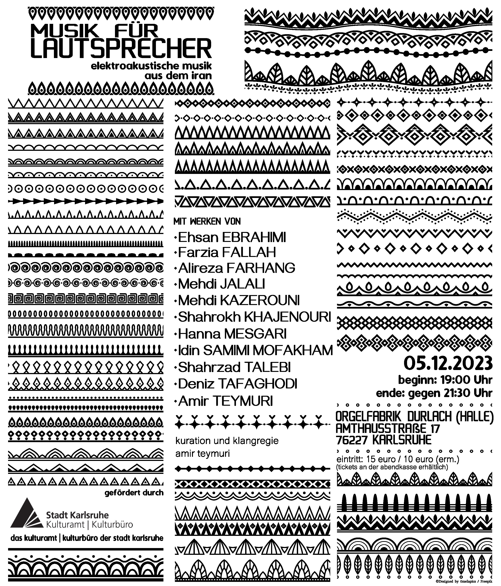

Aufführung
Die Auseinandersetzung mit der iranischen Volksmusik, insbesondere der Musik der lurischen Nomaden im Südwesten Irans, bildet den Grundstein meiner akusmatischen Komposition und weckt in mir eine Mischung aus vertrauten und unbekannten Emotionen. Aus einer entfernten Perspektive, sowohl geografisch als auch zeitlich, höre ich zu und versuche, die Einfachheit und natürliche Freiheit dieser Musik wiederzuentdecken. Lurische Musik wird mit Instrumenten wie der Sorna und dem Dohol gespielt. Die Melodien der Sorna bestehen oft aus repetitiven Mustern von drei bis vier Tönen und sind von zahlreichen mikrotonalen Verzierungen umgeben. Dadurch entsteht eine kreisende Bewegung in der Musik, die sich um sich selbst dreht, ohne ein bestimmtes Ziel zu erreichen. In meinem Stück steht diese statische Masse im Kontrast zu unerwarteten und abrupten Unterbrechungen, die die Bewegung sowohl stören als auch fördern, und so neue Prozesse hervorbringen, welche sich schließlich zu ihrer eigenen ruhenden Masse verdichten. In meiner Komposition wird eine Aufnahme lokaler lurischer Instrumentalisten, die festliche Musik spielen, mithilfe einer Reihe von Algorithmen auf Mikroebene bearbeitet, um letztendlich eine neue, von der iranischen Musik inspirierte heterophone Makroebene des Klangs zu schaffen.
